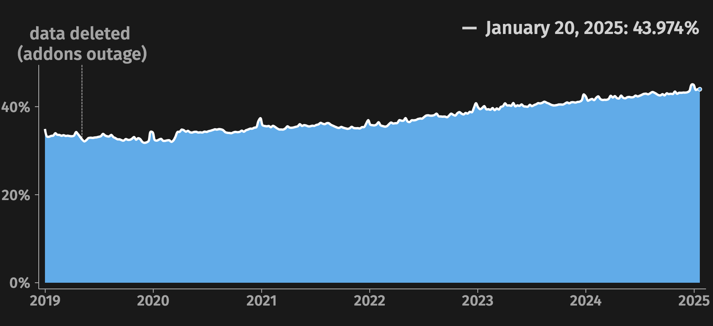
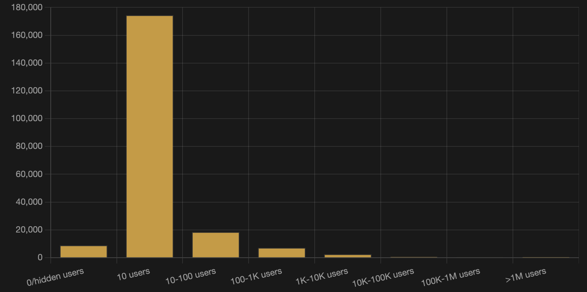
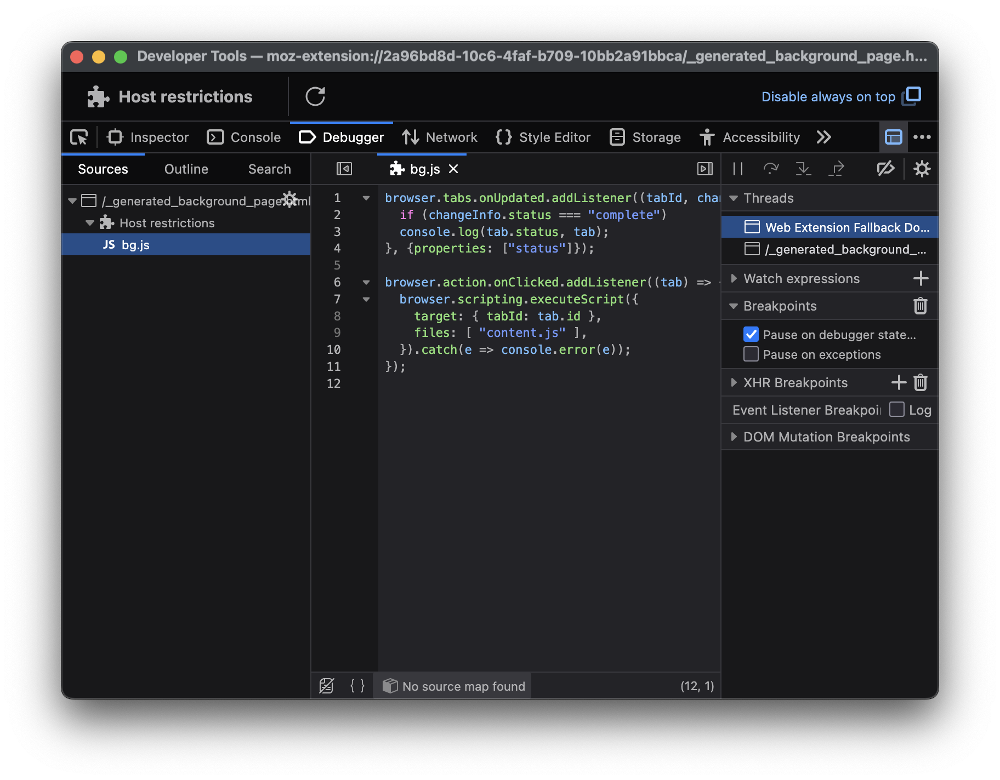
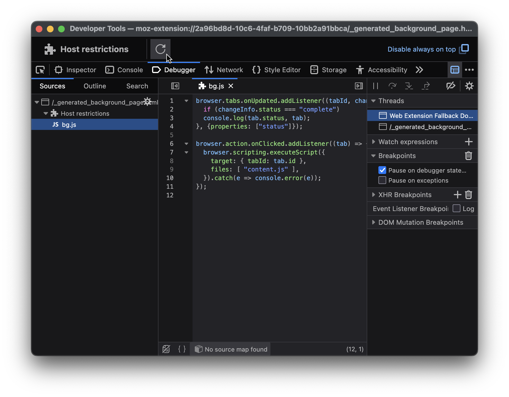
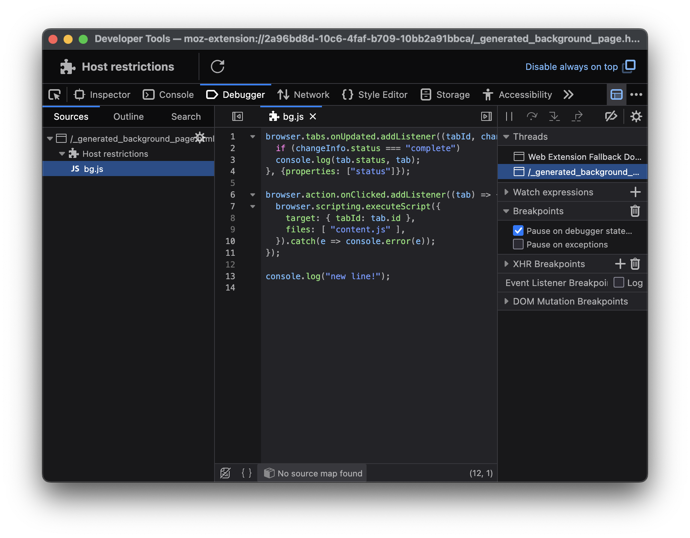

State of
Firefox
Add-ons
Simeon Vincent
Developer Relations Engineer, Firefox Add-ons
good
and getting better
some stats
46,472
extensions on addons.mozilla.org
https://addons.mozilla.org/en-US/firefox/search/?type=extension
1,892
Android extensions on addons.mozilla.org
https://addons.mozilla.org/en-US/android/search/?type=extension
Add-on usage
https://data.firefox.com/dashboard/usage-behavior
User distribution
https://firefox-stats.com/stats
UX
improvements
User scripts
Debugging
improvements
Bug fixes



Content scripts
Console context
Cross-browser
collaboration
W3C
World Wide Web Consortium
WECG
WebExtensions Community Group
WECG
- Reducing inconsistencies
- Evolve browser extensions
Meetings!
- Every other Thursday at 8 AM Pacific
- W3C's annual conference (TPAC)
- Face to face


dotproto.com/talks/fosdem2025